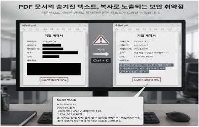
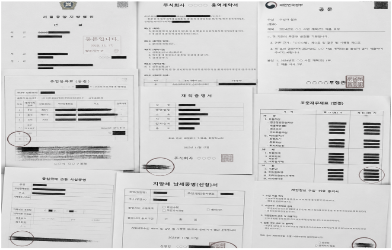
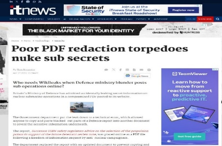
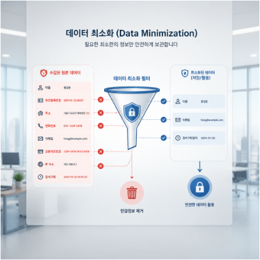
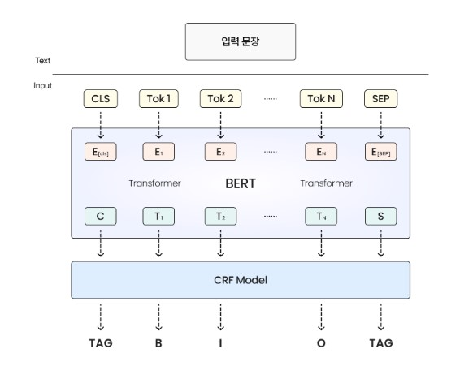
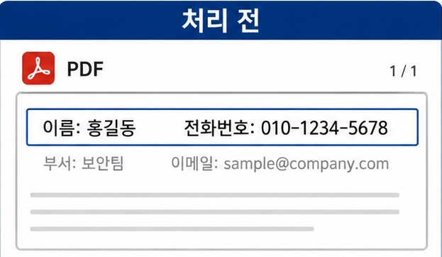
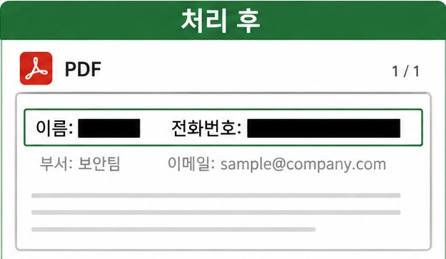
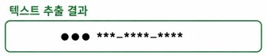
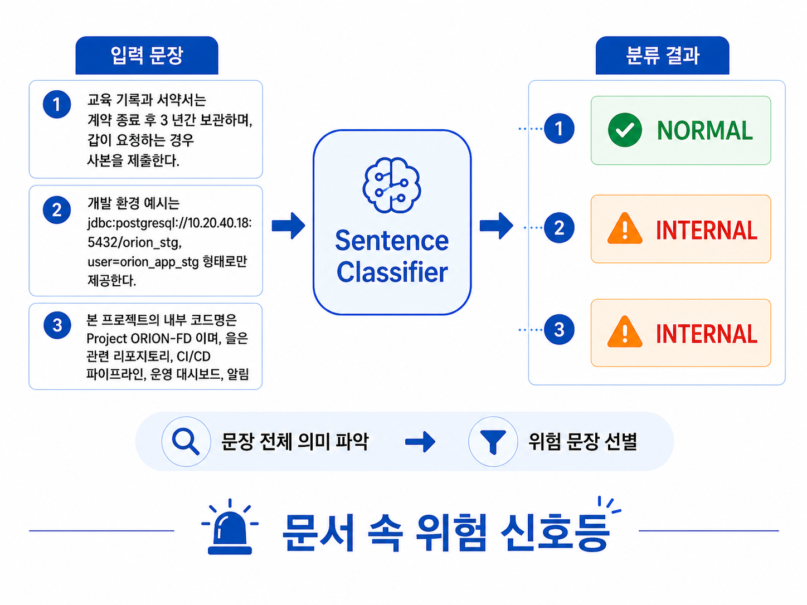
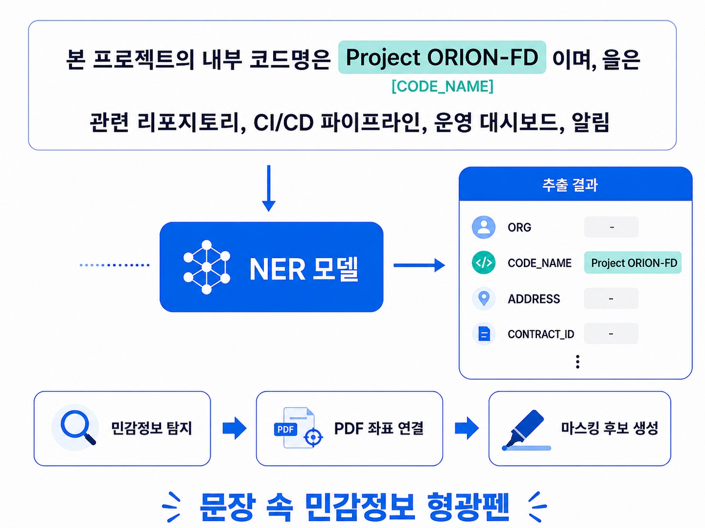

마스킹 처리의 허점
복사와 붙여넣기 과정에서
원본 텍스트가 다시 노출될 수 있습니다.
Safe Share PDF
SSP는 PDF 문서의
개인정보, 업무기밀 숨겨진 메타데이터를
AI로 탐지하고 안전한 공유용 PDF를
생성하는 보안 시스템입니다.
The Problem
검은 박스, 단순 가림, 화면상 마스킹만으로는 PDF 내부 텍스트와 메타데이터가 그대로 남을 수 있습니다.

복사와 붙여넣기 과정에서
원본 텍스트가 다시 노출될 수 있습니다.

Metadata와 Hidden text 레이어가
문서 안에 남아 보안 위험을 만듭니다.

PDF 내부 구조에 대한 이해 부족은
실제 기밀 정보 유출로 이어졌습니다.
Real Cases
법원 제출 PDF 문서를 검은 박스로 처리한 뒤 공개했지만
Copy & Paste만으로 원문이 그대로 노출되었습니다.
핵잠수함 관련 PDF 문서를 공개하면서
텍스트 레이어가 제거되지 않아 기밀 정보가 노출되었습니다.
DS 부문에서 챗GPT에 내부 정보와
설비 계측 소스 코드, 회의 내용이 입력되었습니다.
Current Security Limits
접근 권한 제어 중심 구조라
화면 촬영 등 우회가 가능하고 대응이 제한됩니다.
규칙 기반 탐지 방식으로 운영되어
문맥 분석과 비정형 데이터 탐지가 어렵습니다.
화면상 마스킹 중심 처리로
OCR 레이어와 Metadata 복구 위험이 남을 수 있습니다.
How SSP Works
SSP는 단순히 덮어씌우지 않습니다. 민감정보를 식별하고 실제 데이터를 제거한 뒤, 공유 가능한 새 PDF를 만듭니다.

Core Features
SSP는 국내 기업 및 행정 문서의 한글, 영문, 숫자 혼합 구조를 반영하고, 사용자 검토를 거쳐 유지, 마스킹, 삭제 대상을 결정합니다.
KoELECTRA 기반 NER로 Entity를 분류하고
주요 민감정보를 탐지합니다.
정보 유형과 조합을 기반으로 위험도를 계산해
우선 검토할 항목을 제시합니다.
자동 탐지 결과를 UI에서 확인하고
유지, 마스킹, 삭제 여부를 최종 결정합니다.
Example

예시 문장: 장미 식당에서 2만원 결제했습니다.
Secure PDF Generation
원문 제거, 길이 보존형 마스킹, 문자열 치환을 함께 수행해 복구 가능한 취약점을 줄입니다.



AI Model
Sentence Classifier가 위험 문장을 먼저 선별하고, NER 모델이 실제로 마스킹할 단어를 찾아냅니다.

계약금, 계좌, 내부문서, 보안정보 등
민감정보 가능성이 높은 문장을 우선 탐지합니다.

이름, 전화번호, 주소, 계약번호 등
실제 마스킹할 텍스트를 유형별로 분류합니다.
Differentiation
문서의 메타데이터와 민감정보를 함께 제거해
잔존 가능성을 최소화합니다.
단순 키워드 검색이 아니라
문장의 의미와 맥락을 분석합니다.
AI가 자동으로 후보를 제시해
검토 시간을 줄이고 업무 효율을 높입니다.
Limitations
계약서, 업무 문서, 내부 보고서는
기관과 기업마다 표현 방식이 다릅니다.
PDF마다 텍스트 레이어와 표 구조가 달라
같은 문장도 다르게 추출될 수 있습니다.
Demo
Impact